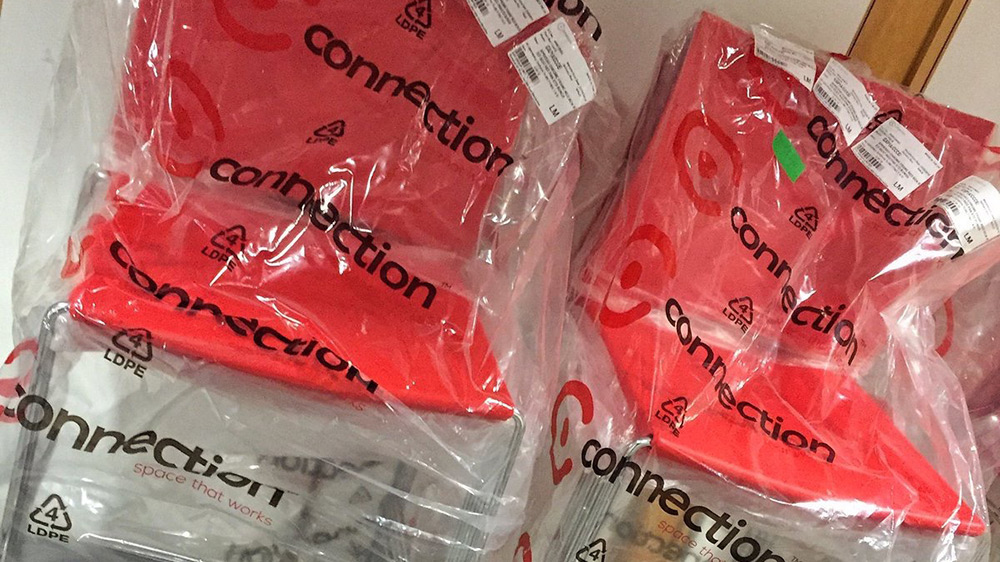
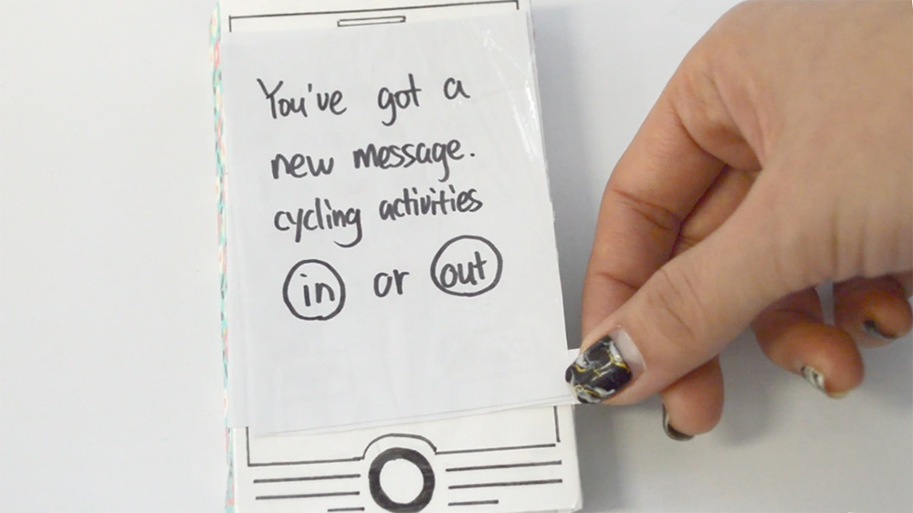
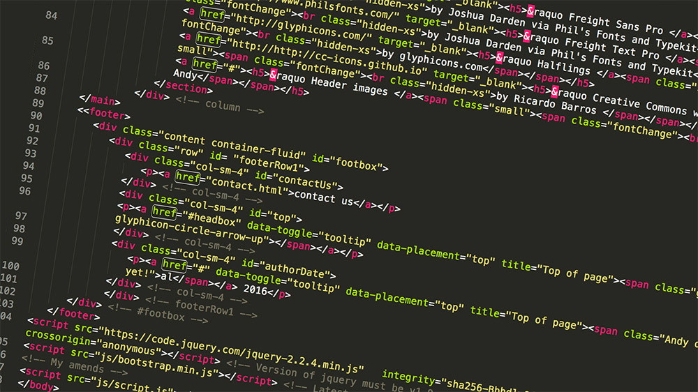

iLab
The lab came on-stream in October 2016. We are rolling things out slowly in the first term and working towards an official launch in January 2017.
In the Autumn term, we will be providing workshops for MA Communication Design and BA Games Design & Art. We have already started an iLabLunch series which offers a space for staff, students and guests across disciplines to critically discuss texts, films and practice work relating to the fields of communications, computing, media and technology. We look forward to adding more and varied workshops for other courses and other people once things have bedded in.
WSAiLab will be run as a cooperative. We are setting up a steering group that will meet on a regular basis to discuss progress and future initiatives. Operational management of WSAiLab is done by Andy Lapham, Senior Teaching Fellow at WSA and the Research Lead is James Branch, Senior Teaching Fellow and Course Leader for MA Communications Design at WSA.
Prototyping
The overarching idea of iLab is grounded in critical making (Ratto, 2011) and the creation of prototypes as means of exploring design ideas and conceptual challenges, rather than as a means to an end in themselves. In this sense the process of building a prototype and the collaboration and meaning-making it involves is as, if not more, important that the product. We thus regard prototypes as examples of Papert’s transitional objects linking the sensory with the abstract.
PAPERT, S. 1980. Mindstorms : children, computers and powerful ideas, Brighton, Harvester. RATTO, M. 2011. Critical Making: Conceptual and Material Studies in Technology and Social Life. The Information Society, 27, 252-260.
Licences
Website architecture and all original content and images are licensed under a Creative Commons Attribution-NonCommercial-ShareAlike 4.0 International License, unless otherwise indicated.
Website
Mobile-first design using the Bootstrap HTML, CSS and JavaScript framework.
Developed with:
» Bootstrap 3
HTML, CSS, JS framework
» LESS
CSS preprocessor
» Sublime Text
text editor for code, markup and prose
» Emmet
HTML and CSS workflow plugin
» PrePros
LESS compiler
» GitHub Desktop
git repository hosting service
» Wordpress.org
world famous CMS
» Adobe Typekit
webfonts via Adobe CC
Designed using:
» Freight Sans Pro
by Joshua Darden via Phil's Fonts and Typekit
» Freight Text Pro
by Joshua Darden via Phil's Fonts and Typekit
» Halflings
by glyphicons.com
» Social Media Icons
by Side Project on Iconfinder
» Creative Commons webfonts
by Ricardo Barros
» Header images
by Andy